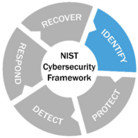

Identify
Field Devices
The field devices can be forgotten in the asset inventory because "out of the sight"
• security problems:
◇ old field devices does not have a centralized management
◇ field device can lack security capabilities
◇ probably we need another portable device(e.g.: tablet) to access at the field devices
• possible solutions:
◇ lock down unneeded services, ports
◇ restrict the access
◇ all the portable devices used to interface with the field devices should be secured and monitored